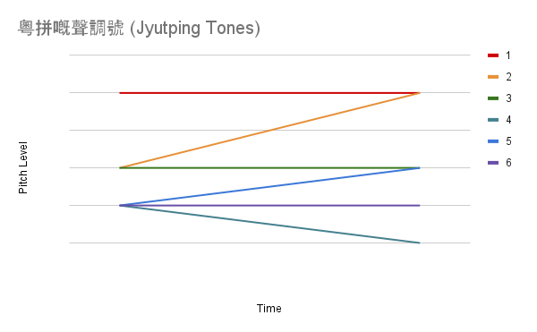
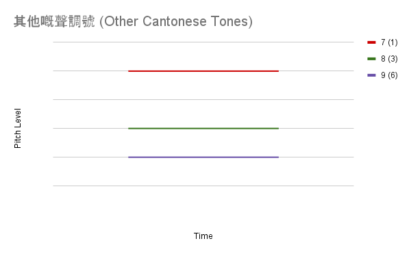

| 粵拼：廣東話嘅拼音 |
Jyutping: Cantonese Pinyin |
| 好多人識國語嘅拼音，不過廣東話嘟有一種，叫做‘粵拼’ (廣東話嘟係叫做粵語)。 國語嘅拼音係用英文嘅聲同埋英文嘅字，不過粵拼係用國際音標(International Phonetics Alphabet (IPA))嘅聲，不過英文嘅字。所以，幾隻字嘅聲唔同英文一樣。 最緊要係‘j’，因為佢整‘y’嘅聲。所以‘
粵
’，我會話英文譯音係‘yoot’。因為國際音標有好多元音，不過英文凈係有五個，兩個嘟唔係同粵拼一樣嘅聲。 所以，我整咗呢啲兩個表喺下便同粵拼嘅元音同輔音同佢哋嘅英文同國際音標聲。(突顥嘅輔音係唔同英文嘅。) 如果有多過一個國際音標字，第一就係Wikipedia話；其他係我自己諗住係咁話。 |
Many people know about Mandarin Pinyin, but Cantonese also has a version called 'Jyutping' (Cantonese is also called '
粵
語
'). Mandarin Pinyin uses English pronunciations of English letters, but Jyutping uses the International Phonetics Alphabet (IPA) pronunciations, while still using English letters. Therefore, many of the letters do not match their English pronunciations. The most egregious is 'j', since it makes a 'y' sound. Therefore I would say the English transliteration of '
粵
' would be 'yoot'. Because IPA has a lot of vowels, but English only has five, neither of them exactly match the Jyutping vowels. Therefore, I made these two tables below with the Jyutping vowels and consonants with their English and IPA sound equivalents. (I have highlighted the consonants that are very different from their English pronunciations.) If there is more than one IPA pronunciation listed, the first is from Wikipedia; the others are how I believe it is said. |
粵拼
Jyutping |
例子
Example |
國際音標字
IPA Letter |
例子嘅國際音標譯音
IPA Transliteration |
英文聲
English Sound |
英文翻譯
English Translation |
| aa |
三
|
a: |
sa:m |
want (American) |
three |
| a |
一
|
ɐ, ʌ |
jɐt |
what (American) |
one |
| e |
嘢
、
畀
|
ɛ, e |
jɛ, bei |
red, way (American) |
stuff, give |
| i |
二
、
冰
|
i:, ɪ |
ji:, bɪŋ |
we, ring (American)
|
two, ice |
| o |
攞
|
ɔ: |
lɔ: |
or
|
grab |
| u |
杯
、
六
|
u:, ʊ |
bu:y, lʊk |
true, book (American) |
cup, six |
| oe |
上
|
œ: |
sœ:ŋ |
work (Australian) |
upward |
| eo |
信
|
ɵ |
sɵn |
foot (American) |
promise, trust, mail |
| yu |
月
|
y: |
jy:t |
view (Australian) |
moon, month |
|
- 如果‘e’喺‘i’前便，就係個雙元音‘ei’。
- 如果‘i’喺‘k’或‘ng’前便，佢變咗‘ɪ’。
- 如果‘u’喺‘k’或‘ng’前便，佢變咗‘ʊ’。
|
- If 'e' comes before 'i', it makes the diphthong 'ei'.
- If 'i' comes before 'k' or 'ng', it becomes 'ɪ'.
- If 'u' comes before 'k' or 'ng', it becomes 'ʊ'.
|
粵拼
Jyutping |
例子
Example |
國際音標字
IPA Letter |
例子嘅國際音標譯音
IPA Transliteration |
英文聲
English Sound |
英文翻譯
English Translation |
| b |
不
|
b |
bɐt |
but
|
not |
| p |
拼
|
p |
pɪŋ |
ping
|
put together |
| m |
文
|
m |
mɐn |
man
|
language |
| f |
方
|
f |
fɔ:ŋ |
find
|
square |
| d |
大
|
d |
daɪ |
dial
|
big |
| t |
田
|
t |
ti:n |
tin
|
field, farm |
| n |
你
|
n |
neɪ |
near
|
you |
| l |
力
|
l |
lɪk |
lick
|
strength |
| z |
再
|
ts, ds, dʒ |
tsɔɪ |
N/a, N/a, joy |
again |
| c |
七
|
tsh, tʃ |
tshɐt |
N/a, chin |
seven |
| s |
心
|
s |
sɐm |
sum
|
heart, feeling |
| j |
日
|
j |
jɐt |
you
|
day (in today) |
| g |
見
|
k, g |
ki:n |
sick, gone |
see, meet |
| k |
啟
|
kh
|
khaɪ |
king
|
open, start, proclaim |
| h |
係
|
h |
haɪ |
hi
|
to be |
| ng |
我
|
ŋ |
ŋɔ: |
wing
|
me, I |
| gw |
光
|
kw, gw
|
kwɔ:ŋ |
cool, gwen
|
bright, light |
| kw |
裙
|
kwh
|
kwhɐn |
quail
|
skirt, dress |
| w |
話
|
w |
wa: |
win
|
say |
|
聲調號
|
Tone Numbers
|
|
廣東話係一個聲調語言；粵拼用六個號代表聲調，因為有六個音調。 不過仲有三個聲調用一樣嘅音調，不過係短啲。 呢啲係七(係一，不過短啲)、八(係三，不過短啲)、同九(係六，不過短啲)。 短定長嘅聲調唔使用多啲號，因為如果個聲嘅尾係‘t’、‘p’、或‘k’，同埋音調係一、三、或六，個聲調會短。 字有幾個選項：
|
Cantonese is a tonal language; JyutPing uses six numbers to represent the tones, because there are six pitches. But there are also three tones that use the same pitches, but are shorter. These are seven (one, but shorter), eight (three, but shorter), and nine (six, but shorter). We don't need to use more numbers to distinguish short and long, because if a sound ends with 't', 'p', or 'k', and the pitch is tone one, three, or six, the tone will be short. Words can have several options:
|
- 兩隻字可以有一樣嘅音節，不過唔同嘅意思，因為佢哋係唔同嘅聲調；例如‘一’同‘日’。 一個係數字，一個係時間。 英文平時用三個聲調做意思：高音係驚喜、平時講係低音、同問句係低音到高音。不過嘟有時用嚟區分唔同嘅意思：例如話man用聲調六就係人，不過話man用聲調三或一就係表達失望。中文用聲調區分意思，所以如果你用錯啲聲調，人哋可能唔知你講緊乜嘢。 呢啲係最緊要嘅；你一定要識。
|
- Two words can have the same syllable sound, but different meanings because they have different tones; for example '一' and '日'. One is a number, and the other is relating to time. English typically uses three tones: high tone is surprise, normal speech is low tone, and asking questions goes from low to high tone. But there still are cases where tone is used to distinguish different meanings: For example saying man with tone six (low tone) is referring to a person, but saying man with tone three or one (high tone) is expressing disappointment. Chinese uses tone to distinguish meaning, so if you use the wrong tone, people probably won't know what you're talking about. This is the most important; you need to learn this.
|
- 兩隻字可以有全部一樣嘅聲，不過唔同嘅字同意思；例如‘月’同‘粵’。 一個係地球嘅衛星，一個係廣東話。 如果你凈係講緊，你就要用上下文推斷意思。 呢啲同英文嘅homophone一樣 (例如英文knew同new)。 (我用英文話因為中文homonym同homophone係一樣嘅字。)
|
- Two words can have the same pronunciation, but different words and meanings; for example '月' and '粵'. One is the Earth's moon, and the other is relating to Cantonese. If you're just talking, you would need to use context to infer the meaning. These are the same as English homophones (e.g. "knew" and "new"). (I wrote 'homophone' in English because the Chinese words for homonym and homophone are the same.)
|
- 兩隻字可以係一樣嘅聲同意思，不過唔同嘅字；例如‘咁’同‘噉’。 你可以用你鍾意嘅，因為佢哋係一樣。 呢啲好似啲英文網上嘅話 (例如英文'cause同cuz係一樣嘅)。
|
- Two words can have the same sound and meaning, but use different words; for example '咁' and '噉'. You can use whichever you prefer, since they are the same meaning. These are like online slang (e.g. "'cause" and "cuz" are the same).
|
- 一隻字可以有幾個唔同嘅意思；例如 ‘啟’可以係開、開始、教、同埋宣佈。 呢啲講同寫兩樣嘟要推斷意思。 英文嘟有呢啲 (例如英文contact可以係一個你知嘅人同埋隱形眼鏡)。
|
- One word can have multiple meanings; for example '啟' can be "open", "start", "teach", and "proclaim". When speaking and reading/writing, you will need to infer the meaning. English also has these (e.g. "contact" can be someone you know or contact lenses).
|
- 一隻字可以有兩個唔同嘅聲。 廣東話有好多呢啲，因為有好多字我哋凈係用嘅聲；例如‘聽’可以係‘teng1’(用耳仔聽聲) 同‘teng1’(今日之後嘅日)。 呢啲同英文homograph一樣 (例如英文bow(弓，用嚟彈箭)同bow(鞠躬，用身體偏前便))。
|
- One word can have two different sounds. Cantonese has a lot of these, since there are a lot of words we just use the sound from; for example '聽' can be 'teng1' (listen) and 'ting1' (tomorrow). These are the same as English homographs (e.g. "bow" (used to shoot arrows) and "bow" (to bend forward)).
|
|
我網上搵到幾個口訣：‘三九四零五二 (七八十)’，同‘加碗細牛腩麵 (一隻碟)’。 下便係一張圖同粵拼嘅六聲調號，同埋一張同其他三個。 值得注意二好似五，同埋平常講緊冇乜分別。
|
I found some mnemonics online: '三九四零五二 (七八十)' "three nine four zero five two (seven eight ten)" and '加碗細牛腩麵 (一隻碟)' "add [a] bowl [of] small beef brisket noodles (one plate)". Below is a figure showing JyutPing's six tones, and one figure showing the other three. It is worth noting that tone two is very similar to tone five, and when you're talking there's typically not an exaggerated difference.
|
|


|
其他嘅聲調嘢
|
Other Tone Info
|
|
網上有幾篇文章話啲聲調號同啲Solfège嘅音節。 佢哋冇話用邊個大音階，因為人哋唔會同一樣嘅音調。 佢哋凈係講啲聲調嘅分別。 佢哋話第一躆係sol、三係mi、六係re。 咁二係mi到sol、五係re到mi、同四係re到do。
|
I found some articles comparing Cantonese tones with Solfège syllables. They don't say which major chord is used, since different people speak in different pitches. They just identify the differences between the tones in this manner. They said 'do' is around English base pitch; then tone one is around 'sol', three is around 'mi', and six is around 're'. Then two is from 'mi' to 'sol', five is from 're' to 'mi', and four is from 're' to 'do'.
|
英文嘟有呢啲聲調，不過平時唔係用嚟區分意思。 個重讀音節平時係聲調一、前便嘅音節平時係六、同後便平時係四。 不過如果有兩個重讀音節同埋一個係最後，兩個平時係六。 例如：
- international
- man (in a disappointed voice)
- what? (questioning, asking to repeat)
- what!? (surprised question)
|
English also has these tones, but they typically aren't used to distinguish meaning. The stressed syllable in a word is typically around tone one, syllables before are around tone six, and syllables after are around tone four. For example:
- international
- man (in a disappointed voice)
- what? (questioning, asking to repeat)
- what!? (surprised question)
|
粵拼+：顏色同聲調標記
|
JyutPing+: With Colour and Tone Symbols
|
|
我網上搵到一種中文同粵拼字體：叫做粵拼+。 佢哋加一個聲調標記，喺音節同聲調號中間，同埋用顏色顥示啲粵拼聲;邊啲字。我覺得係易啲睇；啲聲調標記好過啲號。 我學得用粵拼+學廣東話易啲，所以我哋喺呢度用。
|
I found an online Chinese+JyutPing font: called JyutPing+. They add a tone symbol, between the syllable pronunciation and the tone number, and have colours to distinguish which letters are part of which sounds in the pronunciation. I think it's easier to read; the tone symbols are much better than just numbers. I think JyutPing+ is good for learning Cantonese, so we're using it here.
|
粵拼嘅例外
|
JyutPing Exceptions
|
- 咁(噉)嘅粵拼係‘gam2’，不過我會話係‘gom2’。 ‘gam2’平時係晚輩話，因為‘gom2’係難啲講。
|
- The JyutPing for '咁(噉)' is 'gam2', but I would say it's 'gom2'. 'gam2' is more commonly said by younger generations, because 'gom2' is harder to say.
|
- 如果一個字嘅聲嘅頭係‘n’，有啲人會講用‘l’。 例如，我會話‘可能’。
|
- If a word's sound starts with 'n', some people would pronounce it with an 'l'. For example, I would say '可能'.
|
參考書目 (References)
|
|
|